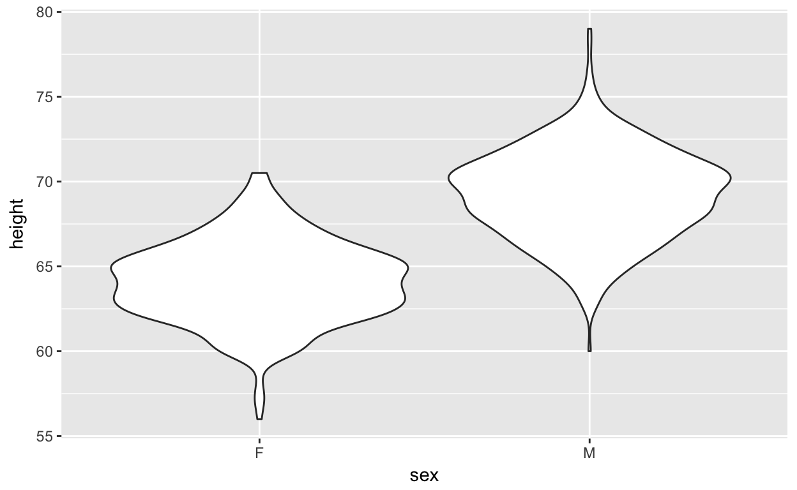

It might be natural for people who have taught statistics for many years to think that the graphics taught conventionally are the basis for a data-science oriented approach to graphics. I think we can do better by adopting a few conventions that simplify, streamline, and unify graphics. You’ll see those conventions in this tutorial and you can read about them in these notes on stats graphics.
A fundamental decision in designing stat graphics is the choice of variables to define the space in which marks will be placed. That’s a rather abstract description, so let’s make it much more concrete.
You specify the graphics frame by choosing two variables from a data frame.
You won’t have much occasion to make an empty graphics frame, but we’ll start with that. We’ll use the Galton data as an example:
gf_blank(height ~ mother, data = Galton)Make an blank frame to show data on height versus sex from the Galton data.
gf_blank( ...your.formula.here... , data = Galton)The NHANESsmall data² frame has many categorical variables, e.g. Gender, HomeOwn, Depressed. Make a blank frame that can be used to display two of these variables.
gf_blank( ...your.formula.here... , data = NHANESsmall)gf_blank(HomeOwn ~ Depressed, data = NHANESsmall)You’re going to put the one variable on the vertical axis. Since there’s no variable for the x axis, we can create one in the formula by putting a suitable character string on the right-hand side of the formula, e.g. `HomeOwn ~ “All together”
gf_blank(HomeOwn ~ "All together", data = NHANESsmall)Make the frame in the standard way, then pipe the output to gf_facet_wrap(), which takes a one-sided formula as an argument.
gf_blank(HomeOwn ~ Depressed, data = NHANESsmall) %>%
gf_facet_wrap( ~ Gender)To plot your data in the frame, use gf_point() instead of gf_blank().
gf_point(height ~ mother, data = Galton)To employ jittering, use gf_jitter() instead of gf_point(). It’s particularly appropriate to jittering when a categorical variable is involved.
gf_jitter(height ~ sex, data = Galton)Use the alpha = argument to either gf_point() or gf_jitter() to set the transparency of the points. A value of 1 means “opaque.” A value of 0 means “completely transparent” (which isn’t very useful in practice.) In between is in between, e.g. 0.2 is pretty transparent, although for very large data sets you might want something like alpha = 0.01.
You may not like how broad the jittering zones are. You can control how much the points are jittered with the height = and width = arguments to gf_jitter(). Both are in the units displayed on the graphics frame. For categorical axes, the distance between two adjacent levels is 1.
Add arguments to the next command to make the horizontal jitter width 0.2 and the vertical jitter 0. Add transparency, setting alpha to a value that makes pretty clear the relative density of points at different values of height.
gf_jitter(height ~ sex, data = Galton, ...your.additional.arguments... )gf_jitter(height ~ sex, data = Galton, width = 0.2, height = 0, alpha = 0.1)Sometimes a quantitative variable takes on only a small set of discrete values. This may not be the part of the story that you want to emphasize with your graph. In such situations, it’s appropriate to use jittering along a categorical axis. Typically the default values will work well.
Modify the command so that there is a little bit of jittering along the vertical axis. Remember that the units for the height and width parameters is the same as shown on the axis.
gf_jitter(height ~ sex, data = Galton)gf_jitter(height ~ sex, data = Galton, width = 0.2, alpha = 0.1, height = 0.5)Make a plot that displays all these variables from NHANESsmall: Gender, Age, Height, HomeOwn. You will want to pick two variables for the frame. For a categorical variable, you can use the color = argument to gf_point()/gf_jitter() effectively. Also for a categorical variable, you can pipe to gf_facet_wrap() to display that variable in different facets of the graph.
Just two commands? Don’t you need something other than gf_point() and gf_jitter()?
No. Remember, we’re trying to streamline and to enforce distinctions among data graphics, graphics of statistics, and graphics for inference.
Descriptive statistics can be graphed in a distinctive way: lines and curves that are mostly horizontal.
The df_stats() function will calculate groupwise statistics. The process for plotting such statistics is
gf_errorbar().For instance:
Stats <- df_stats(height ~ sex, data = Galton, mean)
# Look at Stats to make sure you have the right variable names.
gf_errorbar(mean_height + mean_height ~ sex, data = Stats, color = "blue")The formula argument to the gf_errorbar() function is of the form
bottom_of_bar + top_of_bar ~ explanatory_variableTo draw a single horizontal line, we’re re-purposing gf_errorbar() by setting the bottom and top of the bar at the same level.
The previous graphic shows the different height means for males and females, but the axis limits do not put them in any context. Here are two good ways to do so:
gf_errorbar() to gf_lims(y = c(0, NA)). (The point of the NA is signal that you want R to figure out an appropriate upper bound. Or, you can set it explicitly by specifying a number.)Stats <- df_stats(height ~ sex, data = Galton, mean)
# Look at Stats to make sure you have the right variable names.
gf_errorbar(mean_height + mean_height ~ sex, data = Stats, color = "blue") %>%
gf_lims(y = c(0, NA))Stats <- df_stats(height ~ sex, data = Galton, mean)
# Look at Stats to make sure you have the right variable names.
gf_jitter(height ~ sex, data = Galton, width = 0.2, alpha = 0.2) %>%
gf_errorbar(mean_height + mean_height ~ sex, data = Stats, color = "blue") gf_errorbar()?Wouldn’t it be nicer to have a gf_ function specifically for point statistics? Yes.
But we want to discourage you from plotting point statistics. See the section on graphics for inferential statistics.
When you have two quantitative variables, regression provides a way to describe a model-relationship between them. Use gf_smooth().
gf_smooth(height ~ father, data = Galton)Two things are different from the usual plot of a regression line:
gf_lm() instead. But why? Are we trying to teach students about lines or about relationships?se = FALSE. But why would you want to suppress them. For gf_lm() they are not shown by default, but you can add them with the argument interval = "confidence". You can also use interval = "prediction".You can easily throw a categorical covariate into the regression. Use color = to specify the variable, as with color = ~ sex. Try it.
gf_smooth(height ~ father, data = Galton, color = ~ sex)You’ve probably figured out that you can show the data along with the regression line. Use gf_point() to show the data rows, then pipe to gf_spline(). Try it!
# Your answer here.gf_point(height ~ father, data = Galton, color = ~ sex) %>%
gf_smooth(height ~ father, data = Galton, color = ~ sex)You’re thinking about histograms and density plots. Those are conventional graphics, see gf_histogram() and gf_density() among others. These both take a one-sided formula, because there is only one variable involved. That violates the principle that graphics frames should have two variables.³ And there’s a better way: using gf_violin().

If you’re laying the density function over data, better to fill the violin with a transluscent color and suppress the outlines, for instance
gf_jitter(height ~ sex, data = Galton, width = 0.1, alpha = 0.2) %>%
gf_violin(alpha = 0.5, fill = "blue", color = NA)You can replace the violin with a box-and-whiskers plot, or add one in over the violin. For box-and-whiskers plots, you do not want to set the color to NA. Make it something visible (like color = "blue"). And you don’t really need fill, so you can set fill = NA.
Modify the command above to replace the violin with a box-and-whisker plot. Then, use both the violin and the box-and-whisker together.
gf_jitter(height ~ sex, data = Galton, width = 0.1, alpha = 0.2) %>%
gf_violin(alpha = 0.5, fill = "blue", color = NA)gf_jitter(height ~ sex, data = Galton, width = 0.1, alpha = 0.2) %>%
gf_violin(alpha = 0.5, fill = "blue", color = NA) %>%
gf_boxplot(fill = NA)Box and whisker plots were invented for a time when computation was expensive and graphics were drawn with a pen. We have new tools: non-parametric density estimation, fill, transparency, jittering. So consider when any real purpose is served by teaching about box-and-whisker plots.
In the conventional statistics course, statistical inference is often turned into “find the p-value.” But the American Statistical Association has called for a de-emphasis of p-values.
Use df_stats() to calculate the confidence intervals and gf_errorbar() to display them.
Stats <- df_stats(height ~ sex, data = Galton, ci.mean)
# Look at Stats to make sure you have the right variable names.
gf_jitter(height ~ sex, data = Galton, width = 0.2, alpha = 0.2) %>%
gf_errorbar(lower + upper ~ sex, data = Stats, color = "blue")Use gf_smooth() or gf_lm(), making sure to turn the confidence band on. This is the default for gf_smooth() and can be accomplished in gf_lm() with an argument interval = "confidence". All this was covered earlier.
gf_smooth() and gf_lm(), by default, draw the regression curve in blue, emphasizing it. But the point of inferential statistics is to indicate the range of plausible values for the statistics being calculated. So why emphasize just one plausible value? Show the range.gf_point(height ~ father, data = Galton, alpha = 0.25) %>%
gf_lm(interval = "confidence", color = "NA")Of course, you can also give a little emphasis to the center of the estimate, e.g. color = "gray".
We don’t do very much with inference on histograms or densities. Usually, we don’t have a definite null hypothesis. The questions of interest to students involve the details of the density distribution: are there two peaks, etc.
Here’s a way to talk about inference on densities: Use resampling to generate a host of plausible estimates of the density, and use transparency to emphasize the places where they overlap.
gf_violin(height ~ sex, data = Galton, fill = NA) %>%
gf_violin(data = resample(Galton), fill = "blue", color = NA, alpha = 0.10) %>%
gf_violin(data = resample(Galton), fill = "blue", color = NA, alpha = 0.10) %>%
gf_violin(data = resample(Galton), fill = "blue", color = NA, alpha = 0.10) %>%
gf_violin(data = resample(Galton), fill = "blue", color = NA, alpha = 0.10) %>%
gf_violin(data = resample(Galton), fill = "blue", color = NA, alpha = 0.10)Hard to justify from the available data the little dip at 64 inches for females.
We’re so used to treating proportions as data that we forget they are actually statistics: numbers that summarize a data frame. As such, use df_stats() to calculate them and plot them with gf_errorbar(). We’ll do data, statistical, and inferential graphics in one go. For the statistics and inference, we’ll take advantage of a trick: the proportion at a given level is the mean of a 0/1 variable.
With_indicator <- NHANESsmall %>%
mutate(probability = as.numeric(Gender == "female"))
Stats <-
With_indicator %>%
df_stats(probability ~ HomeOwn, mean, ci.mean)
gf_jitter(probability ~ HomeOwn, data = With_indicator,
alpha = 0.1, height = 0.2, color = ~ Gender) %>%
gf_errorbar(lower + upper ~ HomeOwn, data = Stats) This is a complex command by any standard. The result is ugly because the y-axis has sex indicated in a non-standard way. On the other hand, the method generalizes well to other ideas about proportion, like this regression of homeownership on age.
With_indicator <- NHANESsmall %>%
mutate(probability = as.numeric(HomeOwn == "Own"))
gf_jitter(probability ~ Age, data = With_indicator,
alpha = 0.1, height = 0.2, color = ~ HomeOwn) %>%
gf_smooth(color = NA, alpha = 1) %>%
gf_labs(y = "Probability of owning one's home.")You can hardly be faulted for doing the stats calculation within a conventional graphic.
gf_props( ~ HomeOwn, data = NHANESsmall, fill = ~ Gender, position = "fill")We can always do inference with resampling and transparency:
gf_props( ~ HomeOwn, data = NHANESsmall, fill = ~ Gender, position = "fill", alpha = 0.2) %>%
gf_props( ~ HomeOwn, data = resample(NHANESsmall), fill = ~ Gender, position = "fill", alpha = 0.2) %>%
gf_props( ~ HomeOwn, data = resample(NHANESsmall), fill = ~ Gender, position = "fill", alpha = 0.2) %>%
gf_props( ~ HomeOwn, data = resample(NHANESsmall), fill = ~ Gender, position = "fill", alpha = 0.2) %>%
gf_props( ~ HomeOwn, data = resample(NHANESsmall), fill = ~ Gender, position = "fill", alpha = 0.2) %>%
gf_props( ~ HomeOwn, data = resample(NHANESsmall), fill = ~ Gender, position = "fill", alpha = 0.2) NHANES with just 1000 rows and no missing data.